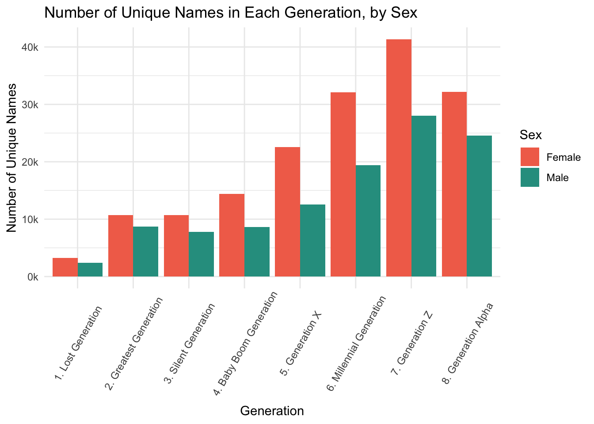

library(tidyverse)
knitr::opts_chunk$set(echo = TRUE, warning=FALSE, message=FALSE)Final Project Assignment #1: Justine Shakespeare
final_Project_assignment_1
final_project_data_description
Justine Shakespeare
Baby Names
Project & Data Description
Part 1. Introduction
Compared to decisions around sleep, breastfeeding, schools and more, naming your baby may seem like one of more arbitrary and inconsequential choices a parent makes. But it is a deeply personal decision, laden with expectations, hopes, and even whimsy. Baby names may seem like an innocuous, fluffy data point, but they provide a fascinating window into the cultural trends and societal values of the United States at different points in time.
My interest in baby names and naming trends in the United States is personally motivated. The day we found out I was pregnant back in spring 2020 my husband suggested the name Oliver if we had a boy. I loved it, but found out soon enough that we weren’t the only ones. In 2020, Oliver was the third most popular name given to baby boys in the United States.
I thought back to my childhood in rural Vermont where four out of the 16 kids in my class in elementary school were named Chris. I did not want my son to be one of four Olivers in a classroom. While we tried to find alternative names, a friend suggested that while Oliver is a popular name now (as Chris was in the mid 1980s) the actual percentage of babies named Oliver is likely less, since the diversity of names has increased in recent times. When I came across this baby names data I knew I had to investigate this hypothesis.
In addition to answering this burning question, I will explore other patterns around name popularity, including which names have been the most popular during different time periods, and whether there is a cyclical nature to popularity for some names.
The Data
The data I’ll be analyzing was downloaded from the Social Security Administration (SSA) website. Much of this data is featured on the website, but is limited to just the top 1,000 names for each year and sex. The data I’ll be working with here includes all of the names in their database, which are drawn from Social Security card applications. This data contains names of babies born in the United States from 1910 until 2021.
Some additional notes about this data:
The SSA states that before 1937 many people did not apply for a Social Security card, and so their names will not be reflected in the data.
Records that did not include the state of birth, sex, and year of birth are not included in the data.
In order to be included, names had to be at least 2 characters long.
In order to protect the privacy of individuals, the SSA restricts this list to only names with at least 5 occurrences. They state in their accompanying documentation: “If a name has less than 5 occurrences for a year of birth in any state, the sum of the state counts for that year will be less than the national count.”
Because name data are not edited there may be mistakes in the sex listed and entries such as “Unknown” and “Baby” have not been removed. In fact, there are 591 occurrences of “Baby” and 760 occurrences of “Unknown” listed as baby names in this data. Since these are not actual baby names, we will remove these during the data cleaning section below.
The SSA did not combine similar names with different spelling. So names Caitlin, Caitlyn, Kaitlin, Kaitlyn, and other version are all listed separately. This should be considered a limitation since it may obscure the true popularity of names that can be spelling in different ways, such as Caitlin.
Research Questions
What are the most popular names in a given state and year? What are the most popular names in a year (across all states)? What are the most popular names in the entire dataset (across all states and all years, 1910 to 2021)? Finally, what have been the most popular names for each generation?
Has there been a change over time in the proportion of babies who are named the most popular names? More specifically, is the name Oliver as popular now in the 2020s as Chris was in the 1980s?
Is there a cyclical nature to the popularity of some names? Are there some names that were popular in the early part of the 20th century that have regained popularity?
Are there certain states that could be considered trendsetters - did popular names become popular in certain states first?
I may not have time to explore the last two research questions (3 and 4) in full, but I’d like to do at least one of them.
Part 2. Describe the data set(s)
First, we’ll read in the dataset and take a look at the data. This data was stored in 51 text files (one for each state, with an additional file for Washington D.C.), which I read into R using the read_delim() function. Since the column names were missing from these files, I added them in when reading in the data.
BabyNames <- read_delim(
c("~/601_Spring_2023/601_Spring_2023/posts/JustineShakespeare_FinalProjectData/AK.txt", "~/601_Spring_2023/601_Spring_2023/posts/JustineShakespeare_FinalProjectData/AL.txt",
"~/601_Spring_2023/601_Spring_2023/posts/JustineShakespeare_FinalProjectData/AR.txt", "~/601_Spring_2023/601_Spring_2023/posts/JustineShakespeare_FinalProjectData/AZ.txt",
"~/601_Spring_2023/601_Spring_2023/posts/JustineShakespeare_FinalProjectData/CA.txt", "~/601_Spring_2023/601_Spring_2023/posts/JustineShakespeare_FinalProjectData/CO.txt",
"~/601_Spring_2023/601_Spring_2023/posts/JustineShakespeare_FinalProjectData/DC.txt", "~/601_Spring_2023/601_Spring_2023/posts/JustineShakespeare_FinalProjectData/DE.txt",
"~/601_Spring_2023/601_Spring_2023/posts/JustineShakespeare_FinalProjectData/FL.txt", "~/601_Spring_2023/601_Spring_2023/posts/JustineShakespeare_FinalProjectData/GA.txt",
"~/601_Spring_2023/601_Spring_2023/posts/JustineShakespeare_FinalProjectData/HI.txt", "~/601_Spring_2023/601_Spring_2023/posts/JustineShakespeare_FinalProjectData/IA.txt",
"~/601_Spring_2023/601_Spring_2023/posts/JustineShakespeare_FinalProjectData/ID.txt", "~/601_Spring_2023/601_Spring_2023/posts/JustineShakespeare_FinalProjectData/IL.txt",
"~/601_Spring_2023/601_Spring_2023/posts/JustineShakespeare_FinalProjectData/IN.txt", "~/601_Spring_2023/601_Spring_2023/posts/JustineShakespeare_FinalProjectData/KS.txt",
"~/601_Spring_2023/601_Spring_2023/posts/JustineShakespeare_FinalProjectData/KY.txt", "~/601_Spring_2023/601_Spring_2023/posts/JustineShakespeare_FinalProjectData/CT.txt",
"~/601_Spring_2023/601_Spring_2023/posts/JustineShakespeare_FinalProjectData/LA.txt", "~/601_Spring_2023/601_Spring_2023/posts/JustineShakespeare_FinalProjectData/NC.txt",
"~/601_Spring_2023/601_Spring_2023/posts/JustineShakespeare_FinalProjectData/MA.txt", "~/601_Spring_2023/601_Spring_2023/posts/JustineShakespeare_FinalProjectData/ND.txt",
"~/601_Spring_2023/601_Spring_2023/posts/JustineShakespeare_FinalProjectData/MD.txt", "~/601_Spring_2023/601_Spring_2023/posts/JustineShakespeare_FinalProjectData/NE.txt",
"~/601_Spring_2023/601_Spring_2023/posts/JustineShakespeare_FinalProjectData/ME.txt", "~/601_Spring_2023/601_Spring_2023/posts/JustineShakespeare_FinalProjectData/NH.txt",
"~/601_Spring_2023/601_Spring_2023/posts/JustineShakespeare_FinalProjectData/MI.txt", "~/601_Spring_2023/601_Spring_2023/posts/JustineShakespeare_FinalProjectData/NJ.txt",
"~/601_Spring_2023/601_Spring_2023/posts/JustineShakespeare_FinalProjectData/MN.txt", "~/601_Spring_2023/601_Spring_2023/posts/JustineShakespeare_FinalProjectData/NM.txt",
"~/601_Spring_2023/601_Spring_2023/posts/JustineShakespeare_FinalProjectData/MO.txt", "~/601_Spring_2023/601_Spring_2023/posts/JustineShakespeare_FinalProjectData/NV.txt",
"~/601_Spring_2023/601_Spring_2023/posts/JustineShakespeare_FinalProjectData/MS.txt", "~/601_Spring_2023/601_Spring_2023/posts/JustineShakespeare_FinalProjectData/NY.txt",
"~/601_Spring_2023/601_Spring_2023/posts/JustineShakespeare_FinalProjectData/MT.txt", "~/601_Spring_2023/601_Spring_2023/posts/JustineShakespeare_FinalProjectData/OH.txt",
"~/601_Spring_2023/601_Spring_2023/posts/JustineShakespeare_FinalProjectData/OR.txt", "~/601_Spring_2023/601_Spring_2023/posts/JustineShakespeare_FinalProjectData/OK.txt",
"~/601_Spring_2023/601_Spring_2023/posts/JustineShakespeare_FinalProjectData/PA.txt", "~/601_Spring_2023/601_Spring_2023/posts/JustineShakespeare_FinalProjectData/RI.txt",
"~/601_Spring_2023/601_Spring_2023/posts/JustineShakespeare_FinalProjectData/SC.txt", "~/601_Spring_2023/601_Spring_2023/posts/JustineShakespeare_FinalProjectData/VA.txt",
"~/601_Spring_2023/601_Spring_2023/posts/JustineShakespeare_FinalProjectData/SD.txt", "~/601_Spring_2023/601_Spring_2023/posts/JustineShakespeare_FinalProjectData/VT.txt",
"~/601_Spring_2023/601_Spring_2023/posts/JustineShakespeare_FinalProjectData/TN.txt", "~/601_Spring_2023/601_Spring_2023/posts/JustineShakespeare_FinalProjectData/WA.txt",
"~/601_Spring_2023/601_Spring_2023/posts/JustineShakespeare_FinalProjectData/TX.txt", "~/601_Spring_2023/601_Spring_2023/posts/JustineShakespeare_FinalProjectData/WI.txt",
"~/601_Spring_2023/601_Spring_2023/posts/JustineShakespeare_FinalProjectData/UT.txt", "~/601_Spring_2023/601_Spring_2023/posts/JustineShakespeare_FinalProjectData/WV.txt",
"~/601_Spring_2023/601_Spring_2023/posts/JustineShakespeare_FinalProjectData/WY.txt"),
delim = ",", col_names = c("State", "Sex", "Year", "Name", "Occurrences"))Now that the data is loaded, let’s take a closer look.
glimpse(BabyNames)Rows: 6,311,504
Columns: 5
$ State <chr> "AK", "AK", "AK", "AK", "AK", "AK", "AK", "AK", "AK", "AK"…
$ Sex <chr> "F", "F", "F", "F", "F", "F", "F", "F", "F", "F", "F", "F"…
$ Year <dbl> 1910, 1910, 1910, 1910, 1910, 1910, 1910, 1910, 1911, 1911…
$ Name <chr> "Mary", "Annie", "Anna", "Margaret", "Helen", "Elsie", "Lu…
$ Occurrences <dbl> 14, 12, 10, 8, 7, 6, 6, 5, 12, 7, 7, 6, 6, 6, 9, 8, 7, 7, …Each case in this data represents a name given to a baby and the number of babies with that name in a given state, year, and sex. As noted above, this data includes all of the data reported to the Social Security Administration (except for baby names with less than 5 occurrences), and so it includes well over 6 million observations.
We will use all of the variables in this data frame, which are: Name, Year, State, Sex, and Occurrences. While the data is already pretty tidy, there are a few small changes we can make to make this data easier to use. Let’s recode the values of the Sex variable so that “F” and “M” are spelled out. As noted in the introduction, there are some cases of “Baby” and “Unknown” in this data that are not actual baby names. We will remove those.
BabyNames <- BabyNames %>%
mutate(Sex = recode(Sex, "F" = "Female", "M" = "Male"))
BabyNames <- BabyNames %>%
filter(Name != "Baby" & Name != "Unknown")
glimpse(BabyNames)Rows: 6,310,153
Columns: 5
$ State <chr> "AK", "AK", "AK", "AK", "AK", "AK", "AK", "AK", "AK", "AK"…
$ Sex <chr> "Female", "Female", "Female", "Female", "Female", "Female"…
$ Year <dbl> 1910, 1910, 1910, 1910, 1910, 1910, 1910, 1910, 1911, 1911…
$ Name <chr> "Mary", "Annie", "Anna", "Margaret", "Helen", "Elsie", "Lu…
$ Occurrences <dbl> 14, 12, 10, 8, 7, 6, 6, 5, 12, 7, 7, 6, 6, 6, 9, 8, 7, 7, …This brings our total observations from 6,311,504 to 6,310,153.
Now let’s take a closer look at the data. We’ll use the n_distinct() functions to inspect the values in some of these variable, both to get a sense of our data and to double check that it doesn’t need any additional cleaning. We can use range() to learn the years included in this data.
n_distinct(BabyNames$State)[1] 51n_distinct(BabyNames$Sex)[1] 2range(BabyNames$Year)[1] 1910 2021The number of distinct values in the State and Sex column are what we’d expect (51 and 2, respectively), and the range function tells us that our data ranges from 1910 to 2021.
Let’s look at how many unique names there are in the data, by Sex.
FemaleNames <- filter(BabyNames, Sex == "Female")
n_distinct(FemaleNames$Name)[1] 21373MaleNames <- filter(BabyNames, Sex == "Male")
n_distinct(MaleNames$Name)[1] 14178There are significantly fewer unique names for males than there are for females in this data. Note this is not counting occurrences, but unique names.
Let’s take a closer look at the occurrences of baby names.
BabyNames %>%
summarize(Min = min(Occurrences),
Mean = mean(Occurrences),
Median = median(Occurrences),
Max = max(Occurrences))As a reminder, this is looking at the occurrences listed in the data without any transformation - so this reflects the total occurrences for a single name, either female or male, in a given state, in a given year. So the max here represents a name that was named 10,026 in one state in one year for either male or female babies. We’ll dig into this more when we get to the analysis.
The mean and median are quite low, especially when considered with the max number of occurrences. This indicates that there are many less popular names in the data.
ARE THERE OTHER DESCRIPTIVE STATISTICS I COULD INCLUDE FOR THIS DATA?
Part 3. The Tentative Plan for Visualization
The analysis and visualization that I will do for this project will be driven by my research questions. I’ll need to create several additional variables in order to answer the research questions, including:
Sum_Occurrences - this variable will be created in several different scenarios and will constitute different sums depending on the goal of the analysis at hand. This will enable summing occurrences across states, years in some cases, and even generations. It will be used for analysis with all of the research questions here.
Generation - this variable will indicate the generation to which each year belongs. It will be used to perform analysis exploring the most popular names in a generation (research question #1).
Generation_Rank - this variable will rank names based on the number of occurrences within a generation. This will be used in the analysis exploring the most popular names in a generation (research question #1).
Year_Rank - this variable will rank names based on the number of occurrences within a year (across all states). It will be used in both the analysis exploring the change in proportion of popular names and the cyclical nature of popular names (research questions #2 and #3).
StateYear_Rank - similar to the Year_Rank variable, this variable will rank names based on the number of occurrences within a year and within a state. It will be used for the analysis exploring whether certain states set naming trends (research question #4).
Proportion - this variable is is created by dividing the sum of occurrences for one name across all states in a given year by the total occurrences of all names across all states in the same year. This will be used for analysis exploring how the proportion of popular names has changed over time (research question #2)
Visualizations
Each research question will include a set of data visualizations:
Research Question 1: What are the most popular names across a variety of categories (state and year, year, all time, generation)?
For this question I will use piping, group_by(), summarize() and other functions to pull the top 10 names in a given state in a given year by sex; in a given year across all states; in the entire dataset (so in all of 1910 until 2021); and finally in each generation. I am still brainstorming the best way to visualize this information (would be great to not just have a series of head() output lists), but I’m not totally sure yet. For the final part of this research question (most popular names in a generation) I will graph the popularity of each of the top names across the whold time period captured in the dataset, to give a visual sense of how those names have fluctuated in their popularity.
Research Question 2: Has there been a change over time in the proportion of babies who are named the top ranking names?
For this question I will use piping, group_by(), summarize(), pivot_wider(), full_join() and other functions to create several new variables, including the Year_Rank and Proportion variable mentioned above. I will create two data frames (one for female names and one for male) that have variables that capture the ranking of each name in each year and the proportion of babies that have that name in given year. I will create a data visualization that charts the top 3 ranked names across time by proportion so that we can see whether the proportion of babies with the top ranked names changes over time.
Research Question 3: Is there a cyclical nature to the popularity of some names?
For this question I will choose some names that were fairly popular early on (before 1950) and create graphs that show how their popularity has changed over time. I will aim to showcase only names that have had interesting changes in their popularity.
Research Question 4: Are there certain states that could be considered trendsetters for baby names?
Because name trends began to shift more quickly after the Baby Boom Generation (see the Generation analysis in Research Question 1), the data for this question will be limited to just names from Generation X until the present. To explore this question I will first create the Year_Rank variable but for each individual state, so the popularity within states will be reflected in a new variables called StateYear_Rank. Then I will explore for a set of specific names when they were first ranked highly in the StateYear_Rank variable. I would like to showcase this in a visual but am not sure which would be best for this…
Below I have begun the analysis and visualization for research questions 1 and 2. This is still a work in progress…
This question has four parts:
a. What are the most popular names in a given state and year, by sex?
b. What are the most popular names in a given year, across all states, by sex?
c. What are the most popular names across the entire data - so in the United States from 1910 to 2021, by sex?
d. What are the most popular names for each generation in the data (as defined by Pew Research Center)
First let’s explore the most popular names in a given state and year, by sex (question 1.a).
# Name given to the most babies in one year and in one state, female and male
PopF_State <- BabyNames %>%
filter(Sex == "Female") %>%
arrange(desc(Occurrences))
head(PopF_State, n = 10)PopM_State <- BabyNames %>%
filter(Sex == "Male") %>%
arrange(desc(Occurrences))
head(PopM_State, n = 10)The name given to the most baby girls in one state is Mary. 8,184 babies were named Mary in Pennsylvania in 1918. It is interesting to note that almost all of the highest occurrences of female names in this data were the name Mary in Pennsylvania. Only Linda broke this trend in New York in 1947, where 7,542 babies were named Linda. These rest of the occurrences in the top ten were all Mary and all happened between 1915 and 1924, suggesting that this name held a particularly strong appeal during this time period in Pennsylvania. It’s interesting to consider what kind of cultural forces were influencing parents in Pennsylvania in the 1910s and 1920s that led them to name their daughters such a traditional and biblical name.
The name given to the most baby boys in one state is Robert in New York in 1947, where 10,026 boys were named Robert. All of the highest occurrences of male names were in New York and were dominated by Robert and Michael. Only John broke through this list in the same year as the top Robert occurrence - in 1947 9,639 boys were named John in New York. The highest occurrences of male names all happened between 1946 and 1963. It’s interesting to consider how the post-war culture would have brought about a consolidation of more traditional male names.
Let’s explore the names with the most occurrences across all states in a given year (question 1.b)
# Most popular name across all states in a year, female and male
PopF_Year <- BabyNames %>%
filter(Sex == "Female") %>%
group_by(Year, Name) %>%
summarize("Sum_Occurrences" = sum(Occurrences)) %>%
arrange(desc(Sum_Occurrences))
head(PopF_Year, n = 10)PopM_Year <- BabyNames %>%
filter(Sex == "Male") %>%
group_by(Year, Name) %>%
summarize("Sum_Occurrences" = sum(Occurrences)) %>%
arrange(desc(Sum_Occurrences))
head(PopM_Year, n = 10)Unsurprisingly, we see some of the same names populating these lists. For female names, the year with the most occurrences of the same named was Linda in 1947, with 99,693 occurrences. In the three years that followed Linda remained the highest occurring name. This undoubtedly is related to the baby boom, a time when people were having unprecedented numbers of babies and, apparently, naming conventions were not particularly diverse. After Linda, Mary populated half of the names with the most occurrences, primarily from the 1920s.
Among the male names, James had the highest number of occurrences in 1947. The male list is dominated by names James, Michael, Robert, and John, primarily from the late 1940s and 1950s. Again this data reflects the trend of baby boomers and the lack of diversity in their naming choices.
Finally, let’s look at the names that have been the most popular in the United States across all states and all time recorded here (question 1.c).
PopF <- BabyNames %>%
filter(Sex == "Female") %>%
group_by(Name) %>%
summarize("Sum_Occurrences" = sum(Occurrences)) %>%
arrange(desc(Sum_Occurrences))
head(PopF, n = 10)PopM <- BabyNames %>%
filter(Sex == "Male") %>%
group_by(Name) %>%
summarize("Sum_Occurrences" = sum(Occurrences)) %>%
arrange(desc(Sum_Occurrences))
head(PopM, n = 10)This shows us the most popular names in the United States across all years and states. Mary is the most popular female name, with 3,747,982 baby girls from 1910 until 2021 named Mary. This is followed by Patricia, Elizabeth, and Jennifer. Surprisingly, even though Linda was in our top ten lists of most occurrences in a year and in a year in a particular state, Linda is only the 5th most popular name of all female baby names. This indicates that While Linda was the most popular during specific times, it did not have the same long-lasting, enduring popularity of the names higher on the list.
James is the most popular male name, with 5,035,762 baby boys named James from 1910 to 2021. This is followed by John, Robert, and Michael. Given the popularity of these names in the previous two lists, it’s unsurprising to see these male names high on this list again.
Finally, let’s turn to the last part of our first research question and look at the most popular names of each generation.
First let’s create a new Generations variable where we will indicate which generation a particular case is from based on the year. We’ll use the years specified by the Pew Research Center to define each generation. See here for the definitions of Generation Z and Generation Alpha.
BabyNames_gen <- BabyNames %>%
mutate("Generation" = case_when(
Year <= 1927 ~ "Greatest Generation",
Year >= 1928 & Year <= 1945 ~ "Silent Generation",
Year >= 1946 & Year <= 1964 ~ "Baby Boom Generation",
Year >= 1965 & Year <= 1980 ~ "Generation X",
Year >= 1981 & Year <= 1996 ~ "Millennial Generation",
Year >= 1997 & Year <= 2012 ~ "Generation Z",
Year >= 2013 ~ "Generation Alpha"))
# Then let's find the total number of occurrences for each generation
BabyNames_gen %>%
group_by(Generation) %>%
summarize(sum_by_gen = sum(Occurrences)) %>%
arrange(sum_by_gen)Now that we have our variable all set, let’s take a look at the top five names (of each sex) for each generation.
# Greatest generation
GreatestGenF <- BabyNames_gen %>%
filter(Generation == "Greatest Generation" & Sex == "Female") %>%
group_by(Name) %>%
summarize(Total_Occurrences = sum(Occurrences)) %>%
arrange(desc(Total_Occurrences))
head(GreatestGenF, n = 5)GreatestGenM <- BabyNames_gen %>%
filter(Generation == "Greatest Generation" & Sex == "Male") %>%
group_by(Name) %>%
summarize(Total_Occurrences = sum(Occurrences)) %>%
arrange(desc(Total_Occurrences))
head(GreatestGenM, n = 5)# Silent generation
SilentGenF <- BabyNames_gen %>%
filter(Generation == "Silent Generation" & Sex == "Female") %>%
group_by(Name) %>%
summarize(Total_Occurrences = sum(Occurrences)) %>%
arrange(desc(Total_Occurrences))
head(SilentGenF, n = 5)SilentGenM <- BabyNames_gen %>%
filter(Generation == "Silent Generation" & Sex == "Male") %>%
group_by(Name) %>%
summarize(Total_Occurrences = sum(Occurrences)) %>%
arrange(desc(Total_Occurrences))
head(SilentGenM, n = 5)# Baby Boomers
BoomerGenF <- BabyNames_gen %>%
filter(Generation == "Baby Boom Generation" & Sex == "Female") %>%
group_by(Name) %>%
summarize(Total_Occurrences = sum(Occurrences)) %>%
arrange(desc(Total_Occurrences))
head(BoomerGenF, n = 5)BoomerGenM <- BabyNames_gen %>%
filter(Generation == "Baby Boom Generation" & Sex == "Male") %>%
group_by(Name) %>%
summarize(Total_Occurrences = sum(Occurrences)) %>%
arrange(desc(Total_Occurrences))
head(BoomerGenM, n = 5)# Generation X
GenXF <- BabyNames_gen %>%
filter(Generation == "Generation X" & Sex == "Female") %>%
group_by(Name) %>%
summarize(Total_Occurrences = sum(Occurrences)) %>%
arrange(desc(Total_Occurrences))
head(GenXF, n = 5)GenXM <- BabyNames_gen %>%
filter(Generation == "Generation X" & Sex == "Male") %>%
group_by(Name) %>%
summarize(Total_Occurrences = sum(Occurrences)) %>%
arrange(desc(Total_Occurrences))
head(GenXM, n = 5)# Millennial generation
MilGenF <- BabyNames_gen %>%
filter(Generation == "Millennial Generation" & Sex == "Female") %>%
group_by(Name) %>%
summarize(Total_Occurrences = sum(Occurrences)) %>%
arrange(desc(Total_Occurrences))
head(MilGenF, n = 5)MilGenM <- BabyNames_gen %>%
filter(Generation == "Millennial Generation" & Sex == "Male") %>%
group_by(Name) %>%
summarize(Total_Occurrences = sum(Occurrences)) %>%
arrange(desc(Total_Occurrences))
head(MilGenM, n = 5)# Generation Z
GenZF <- BabyNames_gen %>%
filter(Generation == "Generation Z" & Sex == "Female") %>%
group_by(Name) %>%
summarize(Total_Occurrences = sum(Occurrences)) %>%
arrange(desc(Total_Occurrences))
head(GenZF, n = 5)GenZM <- BabyNames_gen %>%
filter(Generation == "Generation Z" & Sex == "Male") %>%
group_by(Name) %>%
summarize(Total_Occurrences = sum(Occurrences)) %>%
arrange(desc(Total_Occurrences))
head(GenZM, n = 5)# Generation alpha
GenALPHAF <- BabyNames_gen %>%
filter(Generation == "Generation Alpha" & Sex == "Female") %>%
group_by(Name) %>%
summarize(Total_Occurrences = sum(Occurrences)) %>%
arrange(desc(Total_Occurrences))
head(GenALPHAF, n = 5)GenALPHAM <- BabyNames_gen %>%
filter(Generation == "Generation Alpha" & Sex == "Male") %>%
group_by(Name) %>%
summarize(Total_Occurrences = sum(Occurrences)) %>%
arrange(desc(Total_Occurrences))
head(GenALPHAM, n = 5)It’s interesting to note that you see variation within female names earlier and more than in the male names. Mary is the most popular name for the first three generations here - the Greatest, Silent, and Baby Boomer generation. It’s not until Generation X that Mary drops off, and then it’s not even in the top five at all. In fact, none of the top five female names of the Baby Boomer generation show up in the top five female names for Generation X, but the top five male names of the Baby Boomer generation are all again in the top five for Generation X, they are just in a different order. The male names in general do not vary as widely or as early as the female names. Even Generation Alpha, where we see some significant variation among the top names, includes James, the most popular male name of all time in this dataset.
Data visualization of the top ranked names in each generation
Let’s take a look at the top 5 names for each generation and then graph them to see how they have fared over the years.
# First we'll create a new data frame with a variable that ranks names by the generation (as opposed to year, which is how we will be using the min_rank() function for research question #2)
Generation_rank <- BabyNames_gen %>%
group_by(Generation, Sex, Name) %>%
summarize(SumGen_Occurrences = sum(Occurrences)) %>%
mutate(Gen_Rank = min_rank(desc(SumGen_Occurrences)))
Top5_Gen <- filter(Generation_rank, Gen_Rank <= 5) # filter to just the top five names for each generation.
unique(Top5_Gen$Name) # see which names are the top 5 of their generation. We'll pull from this list to create the vector that we will graph below. [1] "Barbara" "Linda" "Mary" "Patricia" "Susan"
[6] "David" "James" "John" "Michael" "Robert"
[11] "Ava" "Emma" "Isabella" "Olivia" "Sophia"
[16] "Liam" "Mason" "Noah" "William" "Jennifer"
[21] "Kimberly" "Lisa" "Melissa" "Michelle" "Emily"
[26] "Hannah" "Madison" "Christopher" "Jacob" "Joshua"
[31] "Matthew" "Dorothy" "Helen" "Margaret" "Ruth"
[36] "Charles" "Amanda" "Ashley" "Jessica" "Sarah"
[41] "Betty" "Shirley" "Richard" Top5_Gen_graphF <- BabyNames %>%
filter(Name %in% c("Barbara", "Linda", "Mary", "Patricia", "Susan", "Ava",
"Emma", "Isabella", "Olivia", "Sophia", "Jennifer",
"Kimberly", "Lisa", "Melissa", "Michelle", "Emily",
"Hannah", "Madison", "Dorothy", "Helen", "Margaret",
"Ruth", "Amanda", "Ashley", "Jessica", "Sarah", "Betty",
"Shirley")) %>%
group_by(Year, Name) %>%
summarize("sum" = sum(Occurrences)) %>%
ggplot(aes(Year, sum, group = Name, color = Name)) + geom_line() +
labs(title = "Top 5 Female Names of Each Generation", x = "Year", y = "Total Occurrences")
Top5_Gen_graphFTop5_Gen_graphM <- BabyNames %>%
filter(Name %in% c("David", "James", "John", "Michael", "Robert", "Liam",
"Mason", "Noah", "William", "Christopher", "Jacob",
"Joshua", "Matthew", "Charles", "Richard")) %>%
group_by(Year, Name) %>%
summarize("sum" = sum(Occurrences)) %>%
ggplot(aes(Year, sum, group = Name, color = Name)) + geom_line() +
labs(title = "Top 5 Male Names of Each Generation", x = "Year", y = "Total Occurrences")
Top5_Gen_graphMBecause there are names that are in the top five of several different generations, each line here represents a distinct name and I did not group them by generation. You can see the pattern noted above in the graphs here: There are more total female names than male names and female names generally tend to rise and fall in popularity faster than male names, which remain steadily popular for long periods of time.
Another interesting thing to note in these graphs is that for both female and male names, the names that are highly ranked in more recent years have much shorter peaks. This will be explored further in research question #2.
This question has two parts.
a. Has there been a change over time in the proportion of babies who are named the most popular names?
b. Specifically, is the name Oliver as popular now in the 2020s, as Chris was in the 1980s?
In order to explore our research question, let’s create two additional variables.
The first will represent the rank of a name in a given year (separated by sex). We’ll call that new variable “Year_Rank”.
The second variable will represent the proportion of babies that have each name in a given year (separated by sex). We’ll call that variable “Proportion”.
Creating the Year_Rank variable
Creating these variables will involve several steps. We’ll start by creating the Year_Rank variable by creating a new dataframe with a new variable “Sum_Occurrences” the sums the total occurrences for a name in a given year by sex.
# Creates two new variables, Sum_Occurrences and Year_Rank.
BabyNames_rank <- BabyNames %>%
group_by(Year, Sex, Name) %>%
summarize("Sum_Occurrences" = sum(Occurrences)) %>%
mutate(Year_Rank = min_rank(desc(Sum_Occurrences)))
head(BabyNames_rank)## WHAT KIND OF SANITY CHECK COULD I DO FOR THIS ?Creating the Proportion variable
In order to come up with the Proportion variable, we’ll need to do some additional transformation of the data. The Proportion variable is essentially the total occurrences of a name in a given year divided by the total occurrences of all names in that year. In order to get the total occurrences in a given year, we’ll use the summarize function to create a new data frame and join it back to the original dataset.
# This gives you the total occurrences of names in a given year. This data frame
# is 224 observations because there are 112 years in this dataset and there are
# two sexes for each year.
BabyNames_year <- BabyNames %>%
group_by(Year, Sex) %>%
summarize("Total_names_p_year" = sum(Occurrences))
glimpse(BabyNames_year)Rows: 224
Columns: 3
Groups: Year [112]
$ Year <dbl> 1910, 1910, 1911, 1911, 1912, 1912, 1913, 1913, 191…
$ Sex <chr> "Female", "Male", "Female", "Male", "Female", "Male…
$ Total_names_p_year <dbl> 352089, 164223, 372382, 193441, 504299, 383704, 566…Next we’ll use pivot_wider() to make it so that the values in the Sex variable are now variables themselves (Female and Male) with the total occurrences as the value.
BabyNames_pw <- BabyNames_year %>%
pivot_wider(names_from = Sex, values_from = Total_names_p_year)
head(BabyNames_pw)glimpse(BabyNames_pw)Rows: 112
Columns: 3
Groups: Year [112]
$ Year <dbl> 1910, 1911, 1912, 1913, 1914, 1915, 1916, 1917, 1918, 1919, 192…
$ Female <dbl> 352089, 372382, 504299, 566973, 696907, 908538, 965991, 1000424…
$ Male <dbl> 164223, 193441, 383704, 461606, 596441, 781455, 820519, 855249,…Next we’ll make a Proportion variable by dividing the total occurrences of a name in a given year by the total occurrences of all names in that year. We’ll need to start by splitting both of the new data frames we just created by sex and then joining those data frames so that we have two data frames - one for male names and one for female names - that have the rank variable and the total names in a year variable.
# first we need to separate the BabyNames_year data (which includes a new variable with the total occurrences of all names in a given year) by sex
females_year <- select(BabyNames_pw, Year, "Female_Total" = Female)
head(females_year)males_year <- select(BabyNames_pw, Year, "Male_Total" = Male)
head(males_year)# then we need to separate the BabyNames_rank (which includes a new variable that ranks each name in a given year by occurrences) by sex
females_rank <- BabyNames_rank %>%
filter(Sex == "Female")
head(females_rank)males_rank <- BabyNames_rank %>%
filter(Sex == "Male")
head(males_rank)# Then we join the datasets so that we have total occurences by year and sex for each name
BabyNames_joinf <- full_join(females_rank, females_year, by = "Year")
head(BabyNames_joinf)BabyNames_joinm <- full_join(males_rank, males_year, by = "Year")
head(BabyNames_joinm)# Create the proportion variables for the female and male data frames by dividing the sum of occurrences for each name by the total occurrences for that year
BabyNames_F <- BabyNames_joinf %>%
select(Year, Name, Sum_Occurrences, Year_Rank, Female_Total) %>%
mutate("Proportion" = Sum_Occurrences/Female_Total)
head(BabyNames_F)BabyNames_M <- BabyNames_joinm %>%
select(Year, Name, Sum_Occurrences, Year_Rank, Male_Total) %>%
mutate("Proportion" = Sum_Occurrences/Male_Total)
head(BabyNames_M)Data visualization of the top ranked names
I expect to iterate on this, but this is the first visualization that should get at research question #2: Has there been a change over time in the proportion of babies who are named the top ranking names?
This graph shows the top three ranked names and the proportion of babies with that name. Note that each line does not represent a specific name, but rather one of the top 3 ranked names for the given year.
color_m_prop <- c("cyan4", "blue2", "deepskyblue")
BabyNames_M %>%
filter(Year_Rank <= 3) %>%
ggplot(aes(Year, Proportion, group = as.factor(Year_Rank),
colour = as.factor(Year_Rank))) +
geom_line() +
scale_color_manual(values = color_m_prop) +
labs(title = "Proportion of top three names each year",
subtitle = "In recent years, most popular names are a much smaller
proportion than the most popular names earlier in the 20th century",
color = "Name rank")
Is there a way to label some of the names on this graph? Is that possible even though the lines are from the variable “Year_Rank” and not “Name”? Ideally I’d like to display the Name value in some key spots on the graph.
After separating the data by sex and calculating the total occurrences of all names in a year, I noticed that there seems to be an especially large difference between the number of female and male baby names for each year. Since the occurrences count the total number of babies named and not the total number of distinct names, it seems odd that there would be such a large gap between the sexes.
To get a sense of the magnitude of this discrepancy I made a new variable that calculated the difference between the number of male baby names and female baby names each year and graphed it.
# create the new variable, difference, which calculates the difference between
# the female and male total occurrences per year
difference <- BabyNames_pw %>%
mutate("Difference" = Female - Male) %>%
mutate("Sex_Count_Comparison" = case_when(
Difference > 0 ~ "More female",
Difference < 0 ~ "More male"))
head(difference)colors <- c("darkturquoise", "darkorchid2")
# graph it
difference %>%
ggplot(aes(Year, Difference, fill=Sex_Count_Comparison)) +
geom_col() +
scale_fill_manual(name = "Count comparison", values = colors) +
scale_y_continuous(labels = function(x) { paste0(x / 1000, "k")}) +
labs(title = "Difference in female and male baby name occurences by year",
subtitle = "Note this is a count of occurences of names, not number of distinct
names. So this should reflect the population of babies born...??", )
This is very strange - it seems unlikely that there were around 250,000 more boys born in the early 2000s and no one talked about it! Is this discrepancy related to some kind of limitations of the data? Could it possibly be evidence of an error I’ve made in my analysis and transformation so far?
Is there a cyclical nature to the popularity of some names? Are there some names that were popular in the early part of the 20th century that have regained popularity?
Are there certain states that could be considered trendsetters - did popular names become popular in certain states first?